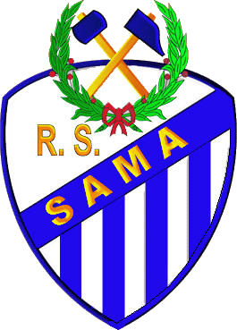

Racing de Sama - Club Langreano
El Rácing de Sama era un club de fútbol de Asturias perteneciente a la localidad de Sama de Langreo, en la Cuenca del Nalón. Nació en 1915 hasta que se fusionó en 1961 con el Círculo Popular de La Felguera.
El club llegó a tener dos nombres distintos, entre 1915 y 1935, se le conoció como el Racing Club de Sama, mientras que desde 1941 y 1965 pasó a denominarse Club Langreano.
Más tarde, en el año 2006, el club vuelve a refundarse de la mano de Elviro Vázquez, quien toma la decisión de crear el nuevo equipo debido a los problemas que tenía con el actual Unión Popular de Langreo. Esta decisión, no fue bien tomado por la localidad langreana, ya que la gran mayoría de amantes del fútbol, estaba en contra de este nuevo proyecto.
Finalmente, el refundado Racing de Sama, desaparece en 2009 debido a una serie de amenazas por parte de los jugadores que conformaban el plantel, porque no habían cobrado el mes de marzo que se les adeudaba.
El club permaneció toda su historia jugando en tercera división, con un total de 18 temporadas repartidas en los años en los que el campeonato se disputó. Se pueden resumir las siguientes características:
- Partidos Jugados: 466
- Partidos Ganados: 199
- Partidos Empatados: 80
- Partidos Perdidos: 187
- Goles a favor: 870
- Goles en contra: 894
- Puntos: 478
En cuanto a la indumentaria que utilizaban sus jugadores, se usaba una camiseta a rayas verticales azules y blancas junto con pantalones y medias azules. Sus partidos como locales los disputaba en el campo La Quintana al comienzo (1915-1920) y en el Torre de los Reyes al final (1921-1961).